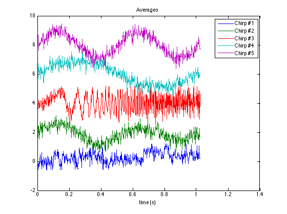
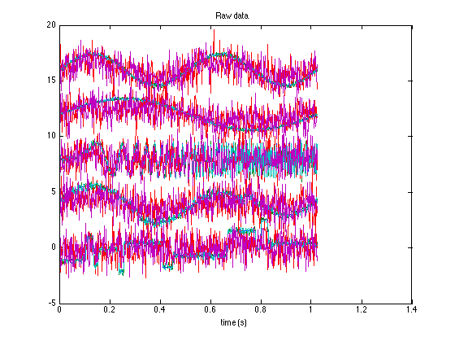
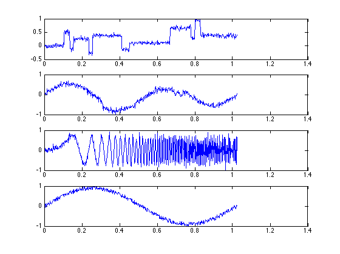
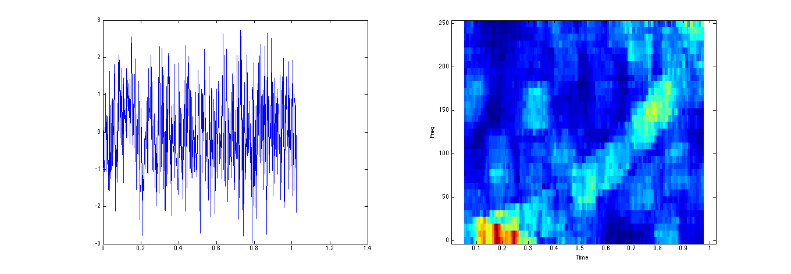
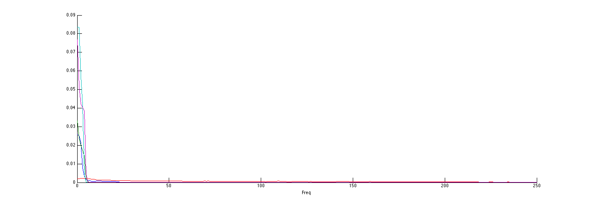
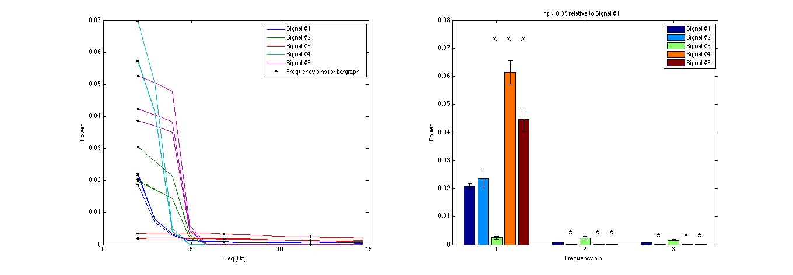

Plotting 3D Data - Noisy signal set
Explores the spectral properties of a 3D matrix making use of several commands from the plotting package.
Contents
- Set up signals
- plott_matrix3D: Plot mean data
- plott_matrix3D: Plot raw data
- plott_ani_pairs: Animated plot along trials
- plott_ani: Animated spectrogram plots to identify bad trials
- plott_ani: Plot all powerspectra
- Set up data for plotting some statistics
- bar_matrix3D: Test for significant difference in three frequency bins
Set up signals
set(0, 'DefaultFigureColor', 'White'); params.tapers = [3 5]; % Load a bunch of random signals load ex_c5_100 % Order data so in the form Ndata x Ntrials x Nsignals [~,ind] = sort(sig_CLU); X = signals(ind,:)'; X = reshape(X,[512,100,5]); X = X(:,1:5,:); % Take a subset - only a few trials [Ndata, Ntrials, Nsignals] = size(X); Fs = 500; signames = arrayfun(@(x) ['Signal #' num2str(x)],1:Nsignals,'UniformOutput',0); % Add some additional noise to a few trials to make things interesting Xnoise = 1*randn([Ndata,2,Nsignals]); X(:,[3 5],:) = X(:,[3 5],:) + Xnoise;
plott_matrix3D: Plot mean data
figure; hl = plott_matrix3D(X(:,:,:),'fs',Fs,'do_mean',1,'do_shift',2); title('Averages'); legend(hl,arrayfun(@(x) ['Chirp #' num2str(x)],1:Nsignals,'UniformOutput',0)) xlabel('time (s)');
plott_matrix3D: Plot raw data
figure; plott_matrix3D(X,'fs',Fs,'do_mean',0,'showErrorbars',0,'do_shift',4,'active_dim',3,'do_zscore',1); title('Raw data'); xlabel('time (s)');
plott_ani_pairs: Animated plot along trials
A few signals suffer from high noise - try to spot them (hint, it's trials 3 and 5)
figure; plott_ani_pairs(X(:,:,1),@plott_fs,X(:,:,2),@plott_fs,X(:,:,3), ... @plott_fs,X(:,:,4),@plott_fs,'plotargs',{'fs',Fs});
plott_ani: Animated spectrogram plots to identify bad trials
figl; % Large figure plott_ani(X(:,:,3),'fs',Fs,'fname',{@plott_fs,@plott_spect}); % Remove the bad trials ind = true(1,size(X,2)); ind([3,5]) = 0; X = X(:,ind,:);
plott_ani: Plot all powerspectra
plott_ani(X,'fname',@(X) plott_psd(X,'fs',Fs,'params',params)); % figure; hl= plott_psd(X,'fs',Fs); ylabel('Power');
Set up data for plotting some statistics
% Take the PSDs of this 3D matrix. Need to do some cell arrays to handle 3D matrix, unfortunately sz = size(X); Xcell = mat2cell(X,[sz(1)],[sz(2)],[ones(1,sz(3))]); [P,f] = cellfun(@(X) psd_wrapper(X,'fs',Fs,'params',params),Xcell,'UniformOutput',0); f = f{1}; P = cell2mat(P); % Take segment of data from 1 - 4Hz. index = find(f >= 1 & f < 15); Y = P(index,:,:); f2 = f(index);
bar_matrix3D: Test for significant difference in three frequency bins
figl; subplot(1,2,1); hl1 = plott_matrix3D(f2,Y,'showErrorbars',0,'do_mean',0); legend(hl1{1},signames); Ysparse = Y(1:5:end,:,:); f_sparse = f2(1:5:end); hold on; hl2 = plott_matrix3D(f_sparse,Ysparse,'showErrorbars',0,'do_mean',0,'LineSpec',{'k.','MarkerSize',10,'LineWidth',2}); legend([hl1{1}; hl2{1}(1)],signames,'Frequency bins for bargraph'); xlabel('Freq (Hz)'); ylabel('Power'); subplot(1,2,2); hl = bar_matrix3D(Ysparse,'active_dim',2); xlabel('Frequency bin'); ylabel('Power'); ylim([0 0.08]) title('*p < 0.05 relative to Signal #1'); legend(hl,signames{:})